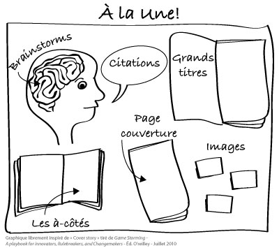

À la Une!
Description sommaire
Il s’agit d’un exercice permettant de dégager des énoncés de vision collective. Le but est d’amener un groupe de personnes à se projeter vers l’avant et à s’imaginer de quoi aurait l’air leur territoire, leur collectif et/ou leur organisation si ce qu’elles désirent comme changement se matérialise concrètement dans le futur. Pour ce faire, l’animateur invite les participants à s’imaginer que leur succès amène différents journaux et magazines du monde entier à s’intéresser à eux et à mettre cette histoire « À la Une »!
 Objectifs principaux
Objectifs principaux
de l’outil
 Étapes du processus de
Étapes du processus de
planification collective
 Les incontournables pour une rencontre réussie
Les incontournables pour une rencontre réussie
 Prérequis
Prérequis
Il est préférable d’avoir effectué un portrait ou une analyse de la situation pour que la vision soit le mieux possible arrimée à la réalité du milieu.
Il est important pour le groupe de comprendre qu’une vision se veut un horizon que l’on souhaite atteindre, qui va nous guider et mobiliser nos énergies, parce qu’elle est inspirante! Il s’agit donc d’un exercice auquel les gens doivent adhérer avant d’y participer.
 Matériel requis
Matériel requis
- Grands cartons blancs ou une feuille de papier-affiche (1 par sous-groupe) pour représenter la Une d’un journal ou d’un magazine;
- Matériel de montage tel que crayons-feutres, revues et journaux qui ne servent plus, ciseaux, colle, etc. en quantité suffisante pour chaque table de travail;
- Le modèle de la Une.
 Taille du groupe
Taille du groupe
Petit
2-10
Moyen
10-30
Grand
30-75
 Durée de l’animation
Durée de l’animation
De 65 à 120 minutes (selon la taille du groupe, le nombre de questions et la tenue ou non d’une période d’échanges)
 La valeur ajoutée
La valeur ajoutée
Pour certaines personnes, les exercices de vision peuvent paraître futiles. Ce type d’activité nous amène à inventer un futur de manière audacieuse et invite les participants à sortir d’une analyse très cartésienne et logique d’une situation. Ce qui est intéressant avec cette activité, c’est que le fait de devoir fabriquer la Une d’un journal ou d’un magazine aide les participants les plus rationnels à matérialiser leur pensée de façon concrète, et ce sans pour autant brimer les plus créatifs. Aussi, l’humour est souvent au rendez-vous!!!
 Déroulement de l’animation
Déroulement de l’animation
Étapes
1. Présentation de l’activité (5 à 10min)
- Demandez aux participants de former des équipes de 4 à 6 personnes et de se grouper avec des gens qu’ils connaissent peu ou pas du tout, idéalement;
- Affichez et expliquez les consignes, le modèle de la Une et les catégories à remplir lors de l’activité.
Les consignes :
- Vous avez réussi collectivement votre développement et dans 10, 15 ou 20 ans, selon ce que souhaite le groupe, vous vous retrouvez sur la page couverture (à la Une) des plus grands quotidiens et magazines du monde… Londres, Paris, New-York, Moscou, Madrid, etc.
- Que voyez-vous?!?
- Soyez audacieux! On met de côté nos doutes et nos craintes;
- On raconte l’histoire de notre GRAND SUCCÈS!
- On se donne une vision pour guider et inspirer notre travail pour les prochaines années;
Vous devez produire cette Une et y inclure les catégories d’information suivantes :
- La page couverture : Il s’agit ici de raconter la GROSSE histoire de votre succès;
- Les grands titres : contient les faits marquants et les plus importants de l’histoire;
- Les à-côtés : révèle d’autres aspects intéressants qui précisent l’histoire;
- Citation(s) : peut venir de n’importe qui, en autant que c’est en lien avec l’histoire;
- Brainstorm : il s’agit ici de coucher sur papier les idées initiales qui ont mené à développer l’histoire;
- Images : Pour supporter le texte avec des photos ou des dessins.
Note : on peut modifier ou diminuer les catégories en fonction des objectifs que l’on veut atteindre.

2. Temps de réflexion individuel (5 à 10 min)
- En silence, chacun imagine de quoi aura l’air son territoire, soncollectif et/ou son organisation si ce qu’il ou elle désire comme changement se matérialise concrètement;
- Invitez les personnes à écrire leurs idées, individuellement, sur une feuille de papier.
3. Élaboration de l’histoire commune de votre succès et fabrication de la « Une »! (30 à 45 min)
- Invitez les participants à débattre de leurs idées. Voient-ils le futur idéal de la même façon? Sur quoi s’entendent-ils? Où sont leurs désaccords? L’histoire à la Une doit représenter la vision de l’ensemble de leur équipe;
- Fabrication de la Une : les équipes peuvent copier le modèle ou l’adapter de façon créative! Néanmoins, toutes les catégories d’information doivent s’y retrouver et être identifiées.
4. Partage des travaux en grand groupe (environ 3 min. par équipe / 10 à 30 min)
- Chaque équipe présente sa Une et les informations qui se trouvent dans chacune des catégories;
- Les équipes sont invitées à identifier les éléments d’information qui sont identiques (bien que possiblement nommés différemment) ou de même nature que certaines informations qui se trouvent sur la Une des autres équipe. Ces informations forment des terrains communs sur lesquels tous sont d’accords et se déclinent sous forme d’énoncés de vision; ce sont les éléments principaux que l’on souhaite voir se concrétiser dans le futur;
- À cette étape, il s’agit des grandes idées qui n’ont pas à être formulées avec précision;
- Prenez en note ces énoncés de vision sur du papier-affiche lorsque les équipes les identifient. Vous pouvez accoler à chacun d’eux une étoile ou un point de couleur à chaque fois que l’idée se répète.
5. Validation des terrains communs et synthèse (15 à 30 min)
- Identifiez clairement les énoncés de vision qui se dégagent des histoires à la Une;
- Validez en grand groupe si l’ensemble des participantes et participants sont en accord avec tous ces éléments. Le but est d’obtenir une entente collective et de ne conserver que ce qui est commun et considéré comme pertinent pour tous.
 Pièges à éviter
Pièges à éviter
- Il ne s’agit pas ici de réfléchir aux moyens d’atteindre une telle vision. Il s’agit uniquement de réfléchir et de s’entendre sur ce que l’on souhaite comme futur idéal.
- Attention aux participants trop terre-à-terre; invitez-les à rêver! Bien sûr, tout n’est pas possible et on ne peut pas tout faire qu’avec de la bonne volonté. Toutefois, on bloque la créativité et la recherche de solutions novatrices en appuyant trop sur le réalisme. Il faut parfois décrocher des préoccupations trop concrètes pour innover.
- Cet exercice vise à produire des énoncés de vision et non pas à écrire une vision très précise et circonscrite à proprement parler. Il faut donc éviter de « s’enfarger dans les fleurs du tapis » lorsque vient le temps de nommer les énoncés de vision. Bien que le sens des mots utilisés soit important pour certaines personnes, il est important de les ramener à l’objectif de l’activité. Un petit groupe de travail pourra être mandaté au besoin pour reformuler de façon plus précise ou plus uniforme les énoncés rassembleurs.
 Suggestions et variantes
Suggestions et variantes
Si le groupe entier ressent le besoin de préciser le sens des énoncés de vision, une étape supplémentaire pourra alors être ajoutée pour écrire la vision précise et circonscrite. Les énoncés doivent alors être débattus et reformulés avec les mots adéquats, en grand groupe, afin de faire consensus. Il peut s’agir d’une étape nécessaire, notamment dans le contexte de planification stratégique. Il faut toutefois prévoir du temps supplémentaire en conséquence…. et le groupe doit être conscient qu’un tel exercice, en grand groupe, peut parfois s’avérer long et fastidieux.
 Référence
Référence
GRAY, James, BROWN, Sunni et James MACANIFO. Game Storming. A playbook for Innovators, Rulebreakers, and Challengemakers. Sebastopol : 2010, O’Reilly Media, 266 pages.